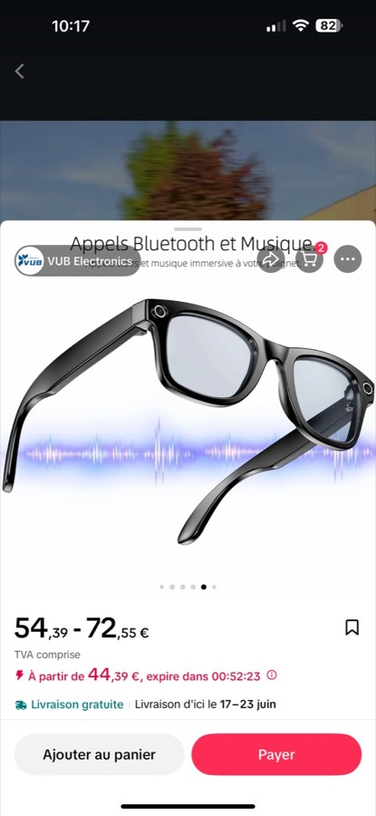
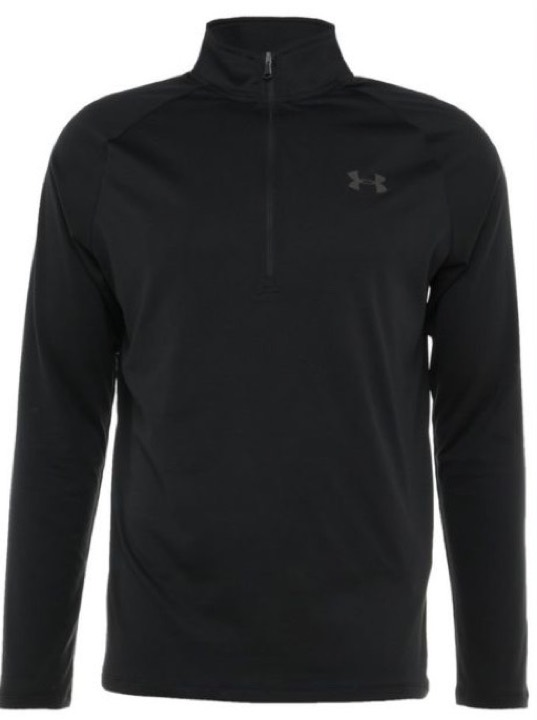
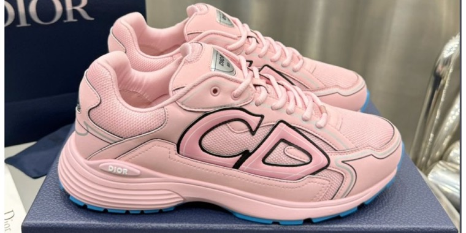

Pas des promesses — des exemples réels de la méthode : partir d'une référence,
construire une scène cohérente, puis décliner le rendu pour une offre e-commerce ou un profil d'influence.
Chaque image est cliquable.
Le vrai sujet, ce n'est pas l'image. C'est le système qui la produit.
Une belle sortie isolée ne suffit pas. La formation sert à organiser les bons outils, les faire travailler ensemble, puis automatiser le processus pour créer du contenu à volonté: visuels, vidéos, posts, offres, avatars et tunnels.
01OutilsChoisir le bon modèle, le bon générateur, le bon format et le bon usage.
02OrganisationRelier références, prompts, fichiers, scripts et critères de qualité.
03AutomatisationTransformer les étapes répétitives en workflow réutilisable.
04ProductionCréer à volonté: contenu, annonces, posts, avatars, vidéos et tunnels.
Produit → contenu e-commerce
Identifier un produit, extraire la direction visuelle, produire une présentation vendable.
Produit

Produit

Produit

Scène, véhicule, mise en situation
Garder la cohérence d'un décor et transformer une référence brute en contenu lifestyle crédible.
Des directions utiles pour transformer les exemples en exercices concrets.
Produit
Packshot → publicité courte
Pour apprendre à passer d'un objet simple à une scène qui donne envie de cliquer.
Transforme ce produit en visuel publicitaire premium, cadrage mobile, lumière contrôlée, arrière-plan cohérent avec une marque moderne, rendu e-commerce crédible.
Influence
Avatar constant sur 5 scènes
Pour tester la cohérence d'un personnage et éviter l'effet “nouvelle personne à chaque image”.
Garde la même identité visuelle, même morphologie, même style vestimentaire, puis décline le personnage dans cinq scènes lifestyle naturelles.
Vidéo
UGC 15 secondes
Pour relier image, script, mouvement caméra et intention commerciale.
Écris un script UGC de 15 secondes pour présenter ce produit, avec hook immédiat, preuve visuelle, objection traitée et call-to-action naturel.
Automatisation
Agent contenu 24/7
Pour transformer une idée en système: veille, génération, tri, publication.
Conçois un workflow qui prend une niche, génère 10 idées de posts, choisit les 3 meilleures, crée les visuels associés et prépare les captions.
Exercices bonus à produire ensuite
Les prochains ponts forts vers les modules jeux vidéo, musique et automatisation.
Jeu vidéo IAUn mini idle game jouable: écran, loop, personnage, ressource, upgrade.
Musique & voixHook audio, cover, voix clonée, mini clip vertical.
Tunnel businessLanding page, pub, fiche offre, automation Telegram ou email.